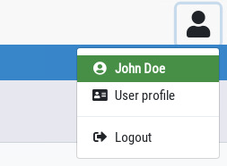
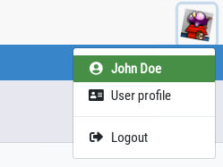

User menu is displayed at the top right of the main window; it gives access to a dropdown menu to display logged-in user name, get access to user profile and logout from the application.
User icon can be displayed as an icon, or as an image if the application allows user to select an avatar:
 
Here is the HTML code:
<div id="user-menu" class="ml-2"> <a href="#" data-toggle="dropdown" data-offset="36,7" class="btn px-1 pt-2"> <img src="resources/img/profile.png" alt="User profile" class="hint" title="User menu" data-placement="bottom" data-offset="0,3" /> </a> <div class="dropdown-menu dropdown-menu-right"> <a href="#" class="dropdown-item pl-3 bg-success text-white"> <i class="fa fa-fw fa-user-circle mr-1"></i> <strong>John Doe</strong> </a> <a href="#" class="dropdown-item pl-3"> <i class="fa fa-fw fa-address-card mr-1"></i> User profile </a> <div class="dropdown-divider"></div> <a href="#" class="dropdown-item pl-3"> <i class="fa fa-fw fa-sign-out-alt mr-1"></i> Logout </a> </div> </div>
To use a generic user icon, you just have to replace the img tag with
<i class="fa fa-fw fa-2x fa-user"></i>.